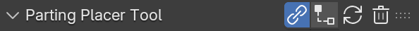

Panel Header¶
Applies to: Parting Placer V2.0.0 · Blender 4.4 · 5.2
Four small icons sit at the right end of the Parting Placer Tool panel title. This page covers each one, left to right.

Sync From Original¶
The link icon, first from the left. It is on by default. The icon shows a closed link when on and a broken link when off.
Its tooltip reads: Match the partings material to the head's original.
While it is on, edits you make to the head's original material carry across to the partings material. Switch it off to keep the two apart.
Relationship Lines¶
The second icon. It switches off the dashed lines Blender draws from every parting's Empty to the head.
It changes nothing in your file. It applies only to the 3D view the panel is in. It has no effect while Overlays are switched off.
Repair Partings¶
The refresh arrow, third from the left. Repair rebuilds the links between partings, Empties and the material if something has come adrift. It also brings older files up to date, including the limits on the appearance sliders.
Run it once in each existing file after you update the add-on.
In V2 it also moves each parting's warp onto a shared warp image. That stops partings turning magenta once a head carries about 25 of them. Its message then counts the warp tile node(s) added.
Check Pushed Sliders First
If a parting's appearance slider sits past its current limit, Repair brings it back to that limit. Check anything you pushed far on purpose before you run it.
Repair and Reset are greyed out until the panel has a head. Set a Target, or select a mesh.
Reset Partings¶
The trash can, last on the right. Reset removes every parting from the object and puts the material back to its original state.
To clear the partings and keep the material you tuned, use Delete All in the parting list instead. See Delete All.
If You're Stuck
- A parting looks doubled? See A Parting Looks Doubled Or Folded.
- The face shows in your normal map? See The Face Shows Through My Baked Normal Map.
Recommended next: Target And Styles